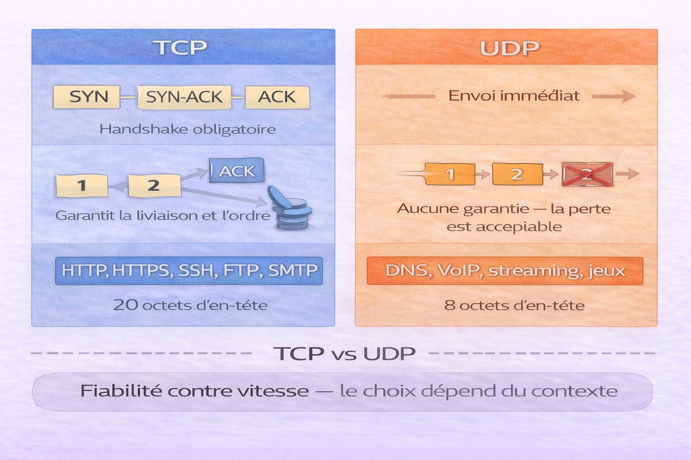
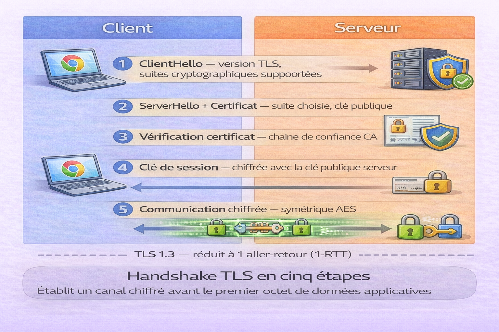
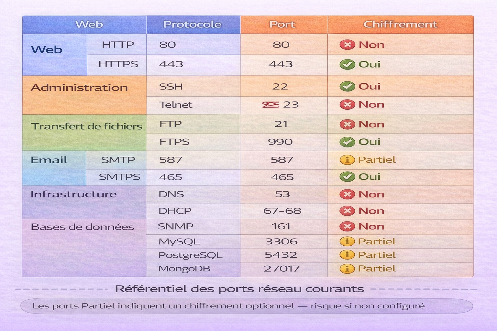

Liste des Protocoles¶
Analogie
Un service postal international. Pour qu'une lettre arrive à destination, tout le monde doit suivre les mêmes règles : format des adresses, types d'envoi (courrier standard, recommandé, express), processus de tri, gestion des erreurs. Les protocoles réseau fonctionnent exactement ainsi : ce sont des ensembles de règles standardisées qui permettent à des ordinateurs de communiquer efficacement, quel que soit leur fabricant ou leur système d'exploitation.
Les protocoles réseau constituent le langage commun qui permet à des milliards d'appareils de communiquer à travers le monde. Chaque protocole répond à des besoins spécifiques en termes de fiabilité, vitesse, sécurité et type de données transmises.
Comprendre les protocoles réseau devient indispensable dès que l'on développe des applications distribuées, sécurise des systèmes, diagnostique des problèmes de connectivité ou conçoit des architectures réseau. Chaque protocole possède des caractéristiques uniques concernant la garantie de livraison, la gestion des erreurs, le chiffrement et les cas d'usage optimaux.
Pourquoi c'est important
Les protocoles déterminent comment les données voyagent, quelles garanties existent sur leur livraison, comment gérer la sécurité et quelle performance attendre. Choisir le mauvais protocole peut compromettre la fiabilité, la sécurité ou les performances d'une application.
Ce document nécessite une compréhension basique du modèle OSI ou TCP/IP et des concepts d'adresse IP et de port. Si le mécanisme d'établissement d'une connexion réseau n'est pas encore acquis, consulter d'abord les bases des réseaux.
Modèle en couches¶
Les protocoles présentés dans ce document s'organisent selon deux modèles de référence — OSI (7 couches) et TCP/IP (4 couches) — qui définissent comment chaque protocole s'empile et interagit avec les couches adjacentes. Ces modèles sont traités en détail dans les chapitres dédiés.
Chapitres de référence
Pour comprendre où chaque protocole se positionne dans la pile réseau, consulter Modèle OSI et Modèle TCP/IP avant d'approfondir les protocoles individuels.
Couche Transport¶
La couche transport gère la communication de bout en bout entre applications. Elle offre deux protocoles aux caractéristiques radicalement différentes.
L'image ci-dessous compare TCP et UDP selon six critères — connexion, fiabilité, vitesse, overhead, contrôle et cas d'usage. C'est la décision architecturale la plus fréquente en développement réseau.

TCP et UDP sont complémentaires et non interchangeables. TCP garantit la livraison et l'ordre au prix d'un overhead et d'une latence supplémentaires — indispensable pour les données critiques. UDP privilégie la vitesse en supprimant toutes les garanties — indispensable pour le temps réel où une retransmission serait pire qu'une perte. DNS utilise UDP pour les requêtes courtes mais bascule sur TCP pour les transferts de zone et les réponses dépassant 512 octets.
TCP — Transmission Control Protocol¶
TCP est un protocole orienté connexion qui garantit la livraison fiable et ordonnée des données.
Caractéristiques
TCP est orienté connexion — établissement via handshake à 3 voies. Il garantit la livraison et l'ordre des paquets. Il implémente un contrôle de flux pour éviter la saturation du récepteur et un contrôle de congestion pour adapter le débit au réseau. Son en-tête minimal est de 20 octets.
Handshake TCP à 3 voies¶
sequenceDiagram
participant Client
participant Serveur
Note over Client,Serveur: Établissement de connexion
Client->>Serveur: SYN (seq=100)
Serveur->>Client: SYN-ACK (seq=300, ack=101)
Client->>Serveur: ACK (ack=301)
Note over Client,Serveur: Connexion établie
Client->>Serveur: Données (seq=101)
Serveur->>Client: ACK (ack=151)
Note over Client,Serveur: Fermeture de connexion
Client->>Serveur: FIN
Serveur->>Client: ACK
Serveur->>Client: FIN
Client->>Serveur: ACKLe diagramme montre le cycle complet d'une connexion TCP : établissement en 3 échanges (SYN, SYN-ACK, ACK), transfert de données avec accusés de réception, et fermeture propre en 4 échanges (FIN, ACK, FIN, ACK).
Exemples par langage¶
import socket
# Serveur TCP
def serveur_tcp():
serveur = socket.socket(socket.AF_INET, socket.SOCK_STREAM)
serveur.bind(('0.0.0.0', 8080))
serveur.listen(5)
print("Serveur TCP en écoute sur le port 8080")
while True:
client, adresse = serveur.accept()
print(f"Connexion depuis {adresse}")
donnees = client.recv(1024)
print(f"Reçu : {donnees.decode()}")
client.send(b"Message recu")
client.close()
# Client TCP
def client_tcp():
client = socket.socket(socket.AF_INET, socket.SOCK_STREAM)
client.connect(('localhost', 8080))
client.send(b"Bonjour serveur")
reponse = client.recv(1024)
print(f"Réponse : {reponse.decode()}")
client.close()
const net = require('net');
// Serveur TCP
const serveur = net.createServer((socket) => {
console.log('Client connecté');
socket.on('data', (data) => {
console.log(`Reçu : ${data.toString()}`);
socket.write('Message reçu');
});
socket.on('end', () => {
console.log('Client déconnecté');
});
});
serveur.listen(8080, () => {
console.log('Serveur TCP en écoute sur le port 8080');
});
// Client TCP
const client = net.createConnection({ port: 8080 }, () => {
console.log('Connecté au serveur');
client.write('Bonjour serveur');
});
client.on('data', (data) => {
console.log(`Réponse : ${data.toString()}`);
client.end();
});
<?php
// Serveur TCP
function serveur_tcp() {
$socket = socket_create(AF_INET, SOCK_STREAM, SOL_TCP);
socket_bind($socket, '0.0.0.0', 8080);
socket_listen($socket, 5);
echo "Serveur TCP en écoute sur le port 8080\n";
while (true) {
$client = socket_accept($socket);
$donnees = socket_read($client, 1024);
echo "Reçu : $donnees\n";
socket_write($client, "Message reçu");
socket_close($client);
}
}
// Client TCP
function client_tcp() {
$socket = socket_create(AF_INET, SOCK_STREAM, SOL_TCP);
socket_connect($socket, 'localhost', 8080);
socket_write($socket, "Bonjour serveur");
$reponse = socket_read($socket, 1024);
echo "Réponse : $reponse\n";
socket_close($socket);
}
?>
package main
import (
"fmt"
"net"
)
// Serveur TCP
func serveurTCP() {
listener, _ := net.Listen("tcp", ":8080")
defer listener.Close()
fmt.Println("Serveur TCP en écoute sur le port 8080")
for {
conn, _ := listener.Accept()
go handleConnection(conn) // Goroutine par connexion
}
}
func handleConnection(conn net.Conn) {
defer conn.Close()
buffer := make([]byte, 1024)
n, _ := conn.Read(buffer)
fmt.Printf("Reçu : %s\n", buffer[:n])
conn.Write([]byte("Message reçu"))
}
// Client TCP
func clientTCP() {
conn, _ := net.Dial("tcp", "localhost:8080")
defer conn.Close()
conn.Write([]byte("Bonjour serveur"))
buffer := make([]byte, 1024)
n, _ := conn.Read(buffer)
fmt.Printf("Réponse : %s\n", buffer[:n])
}
Cas d'usage TCP : applications nécessitant une livraison garantie (HTTP, HTTPS, FTP, SSH, SMTP), transferts de fichiers, bases de données, applications bancaires et financières.
UDP — User Datagram Protocol¶
UDP est un protocole sans connexion qui privilégie la vitesse au détriment de la fiabilité.
Caractéristiques
UDP est sans connexion — aucun établissement préalable. Il n'offre aucune garantie de livraison ni d'ordre. Son overhead est minimal — 8 octets d'en-tête contre 20 pour TCP. Il n'implémente ni contrôle de flux ni contrôle de congestion. Il supporte nativement le broadcast et le multicast.
Exemples par langage¶
import socket
# Serveur UDP
def serveur_udp():
serveur = socket.socket(socket.AF_INET, socket.SOCK_DGRAM)
serveur.bind(('0.0.0.0', 8080))
print("Serveur UDP en écoute sur le port 8080")
while True:
donnees, adresse = serveur.recvfrom(1024)
print(f"Reçu de {adresse} : {donnees.decode()}")
# Réponse directe — pas de connexion établie
serveur.sendto(b"Message recu", adresse)
# Client UDP
def client_udp():
client = socket.socket(socket.AF_INET, socket.SOCK_DGRAM)
# Envoi sans connexion préalable
client.sendto(b"Bonjour serveur", ('localhost', 8080))
# Réception avec timeout recommandé
client.settimeout(2)
try:
reponse, _ = client.recvfrom(1024)
print(f"Réponse : {reponse.decode()}")
except socket.timeout:
print("Pas de réponse (timeout)")
client.close()
const dgram = require('dgram');
// Serveur UDP
const serveur = dgram.createSocket('udp4');
serveur.on('message', (msg, rinfo) => {
console.log(`Reçu de ${rinfo.address}:${rinfo.port} : ${msg}`);
serveur.send('Message reçu', rinfo.port, rinfo.address);
});
serveur.bind(8080, () => {
console.log('Serveur UDP en écoute sur le port 8080');
});
// Client UDP
const client = dgram.createSocket('udp4');
const message = Buffer.from('Bonjour serveur');
client.send(message, 8080, 'localhost', (err) => {
if (err) console.error(err);
console.log('Message envoyé');
});
client.on('message', (msg) => {
console.log(`Réponse : ${msg}`);
client.close();
});
<?php
// Serveur UDP
function serveur_udp() {
$socket = socket_create(AF_INET, SOCK_DGRAM, SOL_UDP);
socket_bind($socket, '0.0.0.0', 8080);
echo "Serveur UDP en écoute sur le port 8080\n";
while (true) {
socket_recvfrom($socket, $buffer, 1024, 0, $ip, $port);
echo "Reçu de $ip:$port : $buffer\n";
socket_sendto($socket, "Message reçu", strlen("Message reçu"), 0, $ip, $port);
}
}
// Client UDP
function client_udp() {
$socket = socket_create(AF_INET, SOCK_DGRAM, SOL_UDP);
$message = "Bonjour serveur";
socket_sendto($socket, $message, strlen($message), 0, 'localhost', 8080);
socket_recvfrom($socket, $buffer, 1024, 0, $ip, $port);
echo "Réponse : $buffer\n";
socket_close($socket);
}
?>
package main
import (
"fmt"
"net"
)
// Serveur UDP
func serveurUDP() {
addr, _ := net.ResolveUDPAddr("udp", ":8080")
conn, _ := net.ListenUDP("udp", addr)
defer conn.Close()
fmt.Println("Serveur UDP en écoute sur le port 8080")
buffer := make([]byte, 1024)
for {
n, clientAddr, _ := conn.ReadFromUDP(buffer)
fmt.Printf("Reçu de %v : %s\n", clientAddr, buffer[:n])
conn.WriteToUDP([]byte("Message reçu"), clientAddr)
}
}
// Client UDP
func clientUDP() {
addr, _ := net.ResolveUDPAddr("udp", "localhost:8080")
conn, _ := net.DialUDP("udp", nil, addr)
defer conn.Close()
conn.Write([]byte("Bonjour serveur"))
buffer := make([]byte, 1024)
n, _ := conn.Read(buffer)
fmt.Printf("Réponse : %s\n", buffer[:n])
}
Cas d'usage UDP : streaming vidéo et audio (perte de quelques paquets acceptable), jeux en ligne (latence critique), DNS (requêtes courtes), VoIP (temps réel prioritaire), IoT (overhead minimal).
TCP vs UDP — Comparaison¶
| Critère | TCP | UDP |
|---|---|---|
| Connexion | Orienté connexion — handshake | Sans connexion |
| Fiabilité | Garantie de livraison et d'ordre | Aucune garantie |
| Vitesse | Plus lent — overhead | Très rapide |
| Overhead | 20 octets minimum | 8 octets |
| Contrôle de flux | Oui | Non |
| Détection d'erreurs | Oui avec retransmission | Checksum basique |
| Ordre des paquets | Garanti | Non garanti |
| Cas d'usage | Données critiques | Temps réel |
Couche Application¶
La couche application contient les protocoles de haut niveau utilisés directement par les applications.
HTTP / HTTPS¶
Couvert en détail dans le chapitre HTTP — Méthodes et Liste des codes d'erreur HTTP.
HTTP utilise le port 80 — non chiffré, vulnérable aux interceptions. HTTPS utilise le port 443 — chiffré via TLS, à utiliser systématiquement.
DNS — Domain Name System¶
Le DNS est traité en détail dans le chapitre DNS — Notions. Ce chapitre couvre la hiérarchie, les types d'enregistrements, la résolution récursive, le TTL et la sécurité DNS.
Rappel rapide : DNS traduit les noms de domaine en adresses IP via une résolution hiérarchique — résolveur récursif, serveur racine, serveur TLD, serveur autoritaire. Port 53 UDP pour les requêtes standard, port 53 TCP pour les transferts de zone et les réponses dépassant 512 octets.
sequenceDiagram
participant Client
participant DNS Local
participant DNS Racine
participant DNS TLD
participant DNS Autorite as DNS Autorité
Client->>DNS Local: example.com ?
DNS Local->>DNS Racine: example.com ?
DNS Racine-->>DNS Local: Demande .com
DNS Local->>DNS TLD: example.com ?
DNS TLD-->>DNS Local: Serveur d'autorité
DNS Local->>DNS Autorite: example.com ?
DNS Autorite-->>DNS Local: 93.184.216.34
DNS Local-->>Client: 93.184.216.34Résolution hiérarchique DNS — la requête traverse quatre acteurs avant d'obtenir l'adresse IP finale. Le résolveur met le résultat en cache selon le TTL de l'enregistrement.
Sécurité DNS
Vulnérabilités principales : DNS Spoofing (injection de fausses réponses), DNS Cache Poisoning (corruption du cache), DNS Tunneling (exfiltration de données encodées dans des requêtes DNS), amplification DDoS (serveurs récursifs ouverts exploités pour multiplier le trafic). Protections : DNSSEC, DoH, DoT, rate limiting.
Résolution DNS par langage¶
import socket
import dns.resolver # pip install dnspython
# Résolution simple
ip = socket.gethostbyname('example.com')
print(f"IP : {ip}")
# Enregistrements A (IPv4)
for rdata in dns.resolver.resolve('example.com', 'A'):
print(f"A : {rdata.address}")
# Enregistrements MX (Mail)
for rdata in dns.resolver.resolve('example.com', 'MX'):
print(f"MX : {rdata.preference} {rdata.exchange}")
# Enregistrements TXT
for rdata in dns.resolver.resolve('example.com', 'TXT'):
print(f"TXT : {rdata.strings}")
const dns = require('dns');
// Résolution simple
dns.lookup('example.com', (err, address, family) => {
console.log(`IP : ${address}`);
});
// Enregistrements IPv4
dns.resolve4('example.com', (err, addresses) => {
console.log(`IPv4 : ${addresses}`);
});
// Enregistrements MX
dns.resolveMx('example.com', (err, addresses) => {
addresses.forEach(mx => {
console.log(`MX : ${mx.priority} ${mx.exchange}`);
});
});
// Enregistrements TXT
dns.resolveTxt('example.com', (err, records) => {
console.log(`TXT : ${records}`);
});
<?php
// Résolution simple
$ip = gethostbyname('example.com');
echo "IP : $ip\n";
// Enregistrements A
$dns = dns_get_record('example.com', DNS_A);
foreach ($dns as $record) {
echo "A : {$record['ip']}\n";
}
// Enregistrements MX
$mx = dns_get_record('example.com', DNS_MX);
foreach ($mx as $record) {
echo "MX : {$record['pri']} {$record['target']}\n";
}
// Enregistrements TXT
$txt = dns_get_record('example.com', DNS_TXT);
foreach ($txt as $record) {
echo "TXT : {$record['txt']}\n";
}
?>
package main
import (
"fmt"
"net"
)
func main() {
// Résolution simple
ips, _ := net.LookupIP("example.com")
for _, ip := range ips {
fmt.Printf("IP : %s\n", ip)
}
// Enregistrements MX
mxs, _ := net.LookupMX("example.com")
for _, mx := range mxs {
fmt.Printf("MX : %d %s\n", mx.Pref, mx.Host)
}
// Enregistrements TXT
txts, _ := net.LookupTXT("example.com")
for _, txt := range txts {
fmt.Printf("TXT : %s\n", txt)
}
}
FTP — File Transfer Protocol¶
FTP permet le transfert de fichiers entre client et serveur.
Port 21 pour le contrôle (commandes), port 20 pour les données (transferts actifs). Deux modes : actif et passif. Non sécurisé — le mot de passe circule en clair.
sequenceDiagram
participant Client
participant Serveur
Client->>Serveur: Connexion port 21
Serveur-->>Client: 220 Welcome
Client->>Serveur: USER username
Serveur-->>Client: 331 Password required
Client->>Serveur: PASS password
Serveur-->>Client: 230 Login successful
Client->>Serveur: PASV (mode passif)
Serveur-->>Client: 227 Entering Passive (IP,PORT)
Client->>Serveur: RETR fichier.txt
Note over Client,Serveur: Transfert sur connexion données
Serveur-->>Client: 226 Transfer completeLe mode passif (PASV) est nécessaire quand le client est derrière un NAT ou un pare-feu — c'est le client qui initie la connexion de données plutôt que le serveur.
from ftplib import FTP
ftp = FTP('ftp.example.com')
ftp.login('username', 'password')
# Lister les fichiers
ftp.retrlines('LIST')
# Télécharger un fichier
with open('fichier_local.txt', 'wb') as f:
ftp.retrbinary('RETR fichier_distant.txt', f.write)
# Envoyer un fichier
with open('fichier_local.txt', 'rb') as f:
ftp.storbinary('STOR fichier_distant.txt', f)
ftp.quit()
FTP vs SFTP vs FTPS
FTP : non sécurisé — mot de passe en clair sur le réseau. FTPS : FTP avec TLS/SSL sur les ports 990/989. SFTP : transfert de fichiers sur SSH, port 22 — recommandé pour tous les transferts sensibles.
SSH — Secure Shell¶
SSH fournit un accès distant sécurisé et un tunnel chiffré.
Port 22. Tout le trafic est chiffré. Authentification par mot de passe ou clé publique. Peut encapsuler d'autres protocoles via le tunneling.
import paramiko # pip install paramiko
ssh = paramiko.SSHClient()
ssh.set_missing_host_key_policy(paramiko.AutoAddPolicy())
# Connexion avec mot de passe
ssh.connect('example.com', username='user', password='pass')
# Exécution de commande distante
stdin, stdout, stderr = ssh.exec_command('ls -la')
print(stdout.read().decode())
# Connexion avec clé privée
key = paramiko.RSAKey.from_private_key_file('/path/to/key')
ssh.connect('example.com', username='user', pkey=key)
# Transfert de fichier via SFTP
sftp = ssh.open_sftp()
sftp.put('local.txt', '/remote/path/file.txt')
sftp.get('/remote/file.txt', 'local_copy.txt')
sftp.close()
ssh.close()
const { Client } = require('ssh2');
const conn = new Client();
conn.on('ready', () => {
console.log('Connexion SSH établie');
// Exécution de commande distante
conn.exec('ls -la', (err, stream) => {
stream.on('data', (data) => {
console.log(data.toString());
});
});
// Transfert de fichier via SFTP
conn.sftp((err, sftp) => {
sftp.fastPut('local.txt', '/remote/file.txt', (err) => {
console.log('Upload terminé');
});
});
}).connect({
host: 'example.com',
port: 22,
username: 'user',
password: 'pass'
});
package main
import (
"fmt"
"golang.org/x/crypto/ssh"
)
func main() {
config := &ssh.ClientConfig{
User: "user",
Auth: []ssh.AuthMethod{
ssh.Password("password"),
},
HostKeyCallback: ssh.InsecureIgnoreHostKey(),
}
client, _ := ssh.Dial("tcp", "example.com:22", config)
defer client.Close()
// Exécution de commande distante
session, _ := client.NewSession()
defer session.Close()
output, _ := session.CombinedOutput("ls -la")
fmt.Println(string(output))
}
Bonnes pratiques SSH
Désactiver l'authentification par mot de passe — utiliser exclusivement les clés. Changer le port par défaut pour réduire les scans automatisés. Déployer Fail2Ban pour bloquer les tentatives de brute-force. Préférer les clés ED25519 — plus sûres et plus rapides que RSA. Ajouter une authentification à deux facteurs pour les accès critiques.
SMTP / IMAP / POP3¶
Protocoles pour l'envoi et la réception d'emails.
| Protocole | Rôle | Port standard | Port SSL/TLS |
|---|---|---|---|
| SMTP | Envoi d'emails | 25, 587 | 465 |
| IMAP | Réception avec synchronisation | 143 | 993 |
| POP3 | Réception avec téléchargement | 110 | 995 |
import smtplib
import imaplib
from email.mime.text import MIMEText
from email.mime.multipart import MIMEMultipart
# Envoi d'email via SMTP avec STARTTLS
def envoyer_email():
msg = MIMEMultipart()
msg['From'] = 'expediteur@example.com'
msg['To'] = 'destinataire@example.com'
msg['Subject'] = 'Test Email'
msg.attach(MIMEText("Ceci est un email de test", 'plain'))
server = smtplib.SMTP('smtp.example.com', 587)
server.starttls()
server.login('username', 'password')
server.send_message(msg)
server.quit()
# Réception via IMAP SSL
def recevoir_emails():
mail = imaplib.IMAP4_SSL('imap.example.com', 993)
mail.login('username', 'password')
mail.select('INBOX')
status, messages = mail.search(None, 'UNSEEN')
for num in messages[0].split():
status, data = mail.fetch(num, '(RFC822)')
print(data[0][1])
mail.close()
mail.logout()
WebSocket¶
WebSocket permet une communication bidirectionnelle en temps réel sur une seule connexion TCP persistante.
Port 80 ou 443 — upgrade depuis HTTP ou HTTPS. Full-duplex : communication simultanée dans les deux sens. La connexion reste ouverte — pas d'overhead HTTP répété à chaque échange.
import asyncio
import websockets
# Serveur WebSocket
async def handler(websocket, path):
async for message in websocket:
print(f"Reçu : {message}")
await websocket.send(f"Echo: {message}")
start_server = websockets.serve(handler, "localhost", 8765)
asyncio.get_event_loop().run_until_complete(start_server)
asyncio.get_event_loop().run_forever()
# Client WebSocket
async def client():
async with websockets.connect('ws://localhost:8765') as websocket:
await websocket.send("Hello Server")
response = await websocket.recv()
print(f"Réponse : {response}")
const WebSocket = require('ws');
// Serveur WebSocket
const wss = new WebSocket.Server({ port: 8765 });
wss.on('connection', (ws) => {
console.log('Client connecté');
ws.on('message', (message) => {
console.log(`Reçu : ${message}`);
ws.send(`Echo: ${message}`);
});
});
// Client WebSocket (navigateur natif)
const ws = new WebSocket('ws://localhost:8765');
ws.onopen = () => {
ws.send('Hello Server');
};
ws.onmessage = (event) => {
console.log(`Réponse : ${event.data}`);
};
package main
import (
"github.com/gorilla/websocket"
"net/http"
)
var upgrader = websocket.Upgrader{}
func handler(w http.ResponseWriter, r *http.Request) {
conn, _ := upgrader.Upgrade(w, r, nil)
defer conn.Close()
for {
msgType, msg, _ := conn.ReadMessage()
conn.WriteMessage(msgType, []byte("Echo: "+string(msg)))
}
}
func main() {
http.HandleFunc("/ws", handler)
http.ListenAndServe(":8765", nil)
}
Cas d'usage WebSocket : chat en temps réel, applications collaboratives, jeux multijoueurs, notifications push, streaming de données.
Couche Internet¶
IP — Internet Protocol¶
IP gère l'adressage et le routage des paquets entre les hôtes.
IPv4 utilise 32 bits — environ 4,3 milliards d'adresses — sous la forme 192.168.1.1. IPv6 utilise 128 bits — 340 undécillions d'adresses — sous la forme 2001:0db8:85a3::8a2e:0370:7334. La pénurie d'adresses IPv4 est le moteur principal de la migration vers IPv6.
ICMP — Internet Control Message Protocol¶
ICMP gère les messages d'erreur et de diagnostic entre équipements réseau.
Commandes principales : ping (Echo Request/Reply pour tester la connectivité), traceroute (trace le chemin réseau en exploitant le TTL IP).
import subprocess
# Ping — test de connectivité
def ping(host):
response = subprocess.run(
['ping', '-c', '4', host],
capture_output=True,
text=True
)
print(response.stdout)
ping('example.com')
# Traceroute — chemin réseau
def traceroute(host):
response = subprocess.run(
['traceroute', host],
capture_output=True,
text=True
)
print(response.stdout)
IPsec¶
IPsec sécurise les communications IP via chiffrement et authentification au niveau de la couche réseau.
Mode Transport : chiffre uniquement la charge utile du paquet — utilisé entre deux hôtes. Mode Tunnel : chiffre tout le paquet IP original et l'encapsule dans un nouveau paquet — utilisé pour les VPN site-à-site.
Protocoles de sécurité¶
TLS/SSL — Transport Layer Security¶
L'image ci-dessous représente le handshake TLS en cinq étapes. C'est le mécanisme qui protège toutes les communications HTTPS, SMTPS, IMAPS et LDAPS.

Le handshake TLS établit un canal chiffré en cinq étapes. Le client annonce ses capacités cryptographiques (ClientHello). Le serveur sélectionne les algorithmes et envoie son certificat (ServerHello). Le client vérifie le certificat contre une autorité de certification de confiance. Le client génère une clé de session et la chiffre avec la clé publique du serveur. Les deux parties confirment et toutes les communications suivantes sont chiffrées symétriquement. TLS 1.3 réduit ce processus à un seul aller-retour.
TLS chiffre les communications entre client et serveur — il remplace SSL, désormais obsolète.
sequenceDiagram
participant Client
participant Serveur
Client->>Serveur: ClientHello
Serveur->>Client: ServerHello + Certificat
Client->>Serveur: Vérification certificat
Client->>Serveur: Clé de session chiffrée
Serveur->>Client: Confirmation
Note over Client,Serveur: Communication chiffrée établie| Version | Statut |
|---|---|
| SSL 2.0 / 3.0 | Obsolète et vulnérable — à désactiver impérativement |
| TLS 1.0 / 1.1 | Déprécié — ne plus utiliser |
| TLS 1.2 | Supporté — acceptable |
| TLS 1.3 | Recommandé — plus rapide et plus sécurisé |
OAuth 2.0 / OpenID Connect¶
Protocoles d'autorisation (OAuth 2.0) et d'authentification (OpenID Connect) pour les APIs et applications modernes.
sequenceDiagram
participant User
participant Client
participant Auth
participant API
User->>Client: Demande d'accès
Client->>Auth: Redirection autorisation
User->>Auth: Authentification
Auth->>Client: Code autorisation
Client->>Auth: Échange code contre token
Auth->>Client: Access Token
Client->>API: Requête avec token
API->>Client: DonnéesOAuth 2.0 délègue l'autorisation sans partager les credentials. OpenID Connect ajoute une couche d'identité sur OAuth 2.0 via un ID Token JWT.
Tableau récapitulatif des ports¶
L'image ci-dessous présente les ports les plus courants classés par catégorie. En audit et en pentesting, cette cartographie est le point de départ de toute reconnaissance réseau.

Les ports inférieurs à 1024 sont les "well-known ports" — réservés aux protocoles système. Connaître le port d'un service permet de cibler un scan (nmap -p 443), de configurer des règles firewall précises, et d'identifier des services exposés involontairement. Les ports marqués "Partiel" indiquent que le chiffrement est optionnel ou configurable — ils représentent un risque si mal configurés.
| Protocole | Port(s) | Transport | Chiffré |
|---|---|---|---|
| HTTP | 80 | TCP | Non |
| HTTPS | 443 | TCP | Oui — TLS |
| FTP | 20-21 | TCP | Non |
| FTPS | 989-990 | TCP | Oui — TLS |
| SSH / SFTP | 22 | TCP | Oui |
| Telnet | 23 | TCP | Non — obsolète |
| SMTP | 25, 587 | TCP | Partiel |
| SMTPS | 465 | TCP | Oui — TLS |
| DNS | 53 | UDP / TCP | Non |
| DHCP | 67-68 | UDP | Non |
| POP3 | 110 | TCP | Non |
| POP3S | 995 | TCP | Oui — TLS |
| IMAP | 143 | TCP | Non |
| IMAPS | 993 | TCP | Oui — TLS |
| SNMP | 161-162 | UDP | Non |
| LDAP | 389 | TCP | Non |
| LDAPS | 636 | TCP | Oui — TLS |
| RDP | 3389 | TCP | Partiel |
| MySQL | 3306 | TCP | Partiel |
| PostgreSQL | 5432 | TCP | Partiel |
| MongoDB | 27017 | TCP | Partiel |
| Redis | 6379 | TCP | Partiel |
Bonnes pratiques de sécurité¶
Principe du moindre privilège¶
N'ouvrir que les ports strictement nécessaires et filtrer par adresse source.
# Accepter SSH uniquement depuis une IP spécifique
iptables -A INPUT -p tcp -s 192.168.1.100 --dport 22 -j ACCEPT
iptables -A INPUT -p tcp --dport 22 -j DROP
# Accepter HTTP et HTTPS depuis n'importe quelle source
iptables -A INPUT -p tcp --dport 80 -j ACCEPT
iptables -A INPUT -p tcp --dport 443 -j ACCEPT
# Politique par défaut — bloquer tout le trafic entrant non autorisé
iptables -P INPUT DROP
Chiffrement systématique¶
Utiliser toujours les versions chiffrées des protocoles : HTTPS plutôt que HTTP, SFTP ou FTPS plutôt que FTP, SMTPS et IMAPS plutôt que SMTP et IMAP non chiffrés, SSH plutôt que Telnet.
Surveillance et journalisation¶
Loguer toutes les connexions pour détecter les activités suspectes et alimenter les outils SIEM.
Mise à jour régulière¶
Maintenir les systèmes à jour pour corriger les vulnérabilités connues — CVE publiées régulièrement sur les implémentations de TLS, OpenSSH, OpenSSL et les stacks réseau des OS.
Conclusion¶
Ce qu'il faut retenir
Les notions abordées autour de liste protocoles sont le système nerveux de l'informatique moderne. Sans une maîtrise parfaite de ces protocoles et modèles, le dépannage de problèmes d'infrastructure ou la sécurisation de communications restent de pures suppositions.
Conclusion
Les protocoles réseau constituent l'infrastructure invisible qui permet au monde numérique de fonctionner. Leur compréhension dépasse la simple mémorisation de ports et de noms pour englober une vision holistique de la communication réseau, des compromis entre performance et fiabilité, et des implications de sécurité. TCP garantit la livraison au prix de la latence — UDP sacrifie la fiabilité pour la vitesse. TLS chiffre les échanges mais ne protège pas contre les erreurs de configuration. Chaque protocole a été conçu pour résoudre un problème précis. Choisir le protocole adapté, l'implémenter correctement et le sécuriser rigoureusement — c'est là que se joue la différence entre une infrastructure robuste et une surface d'attaque ouverte.